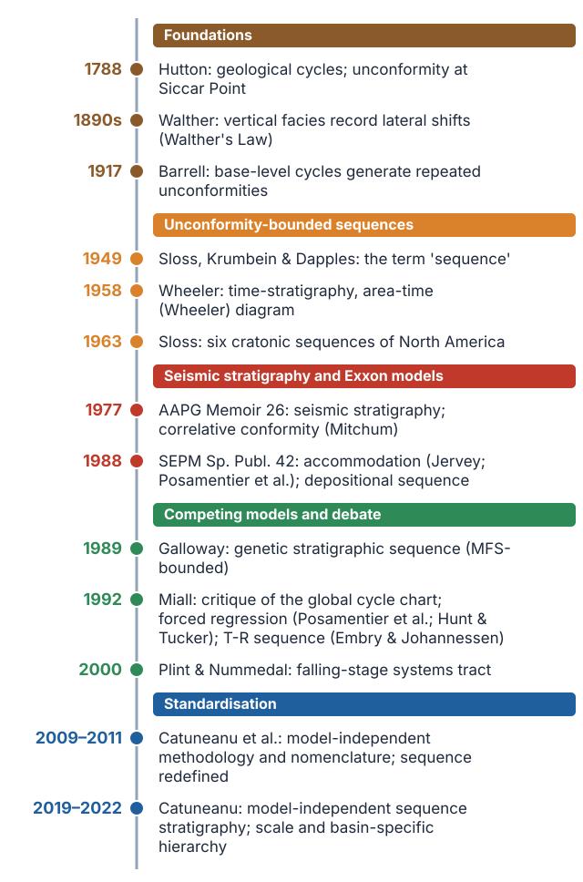
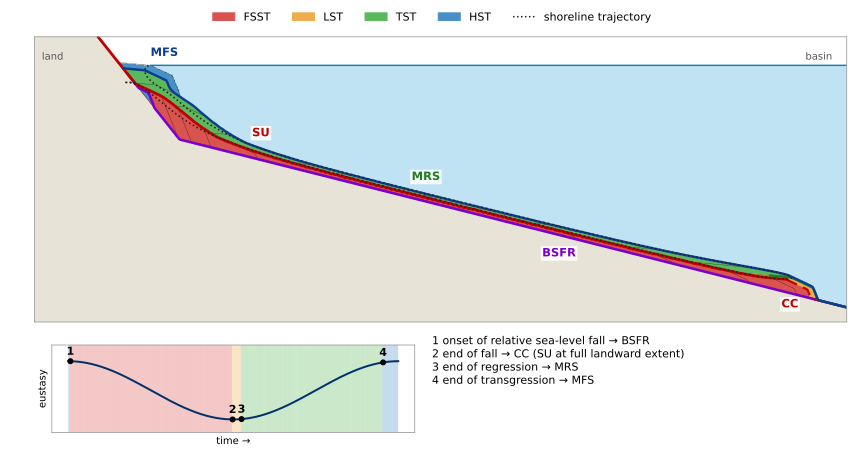
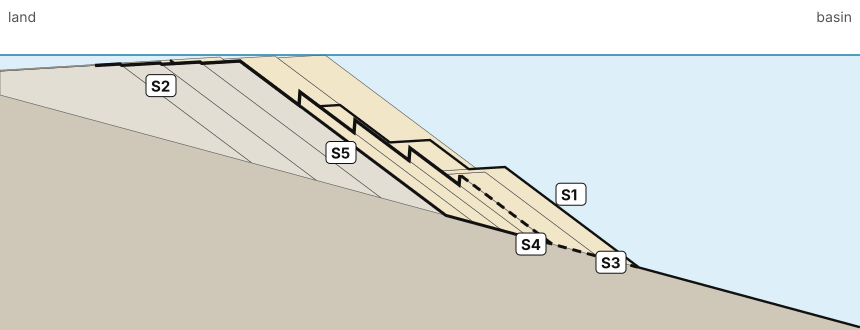
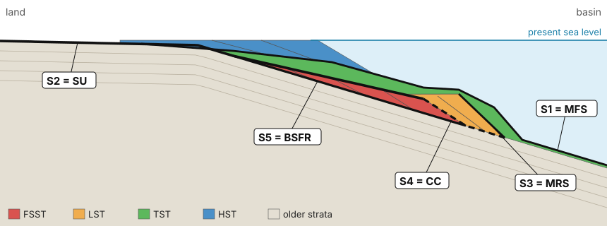
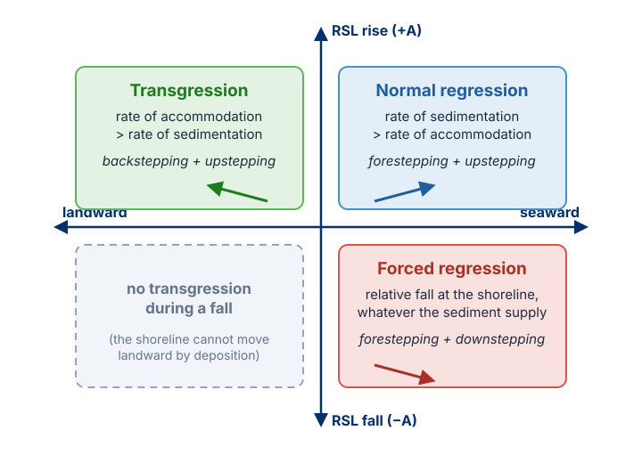

Learning Objectives
- Trace how the answers to three questions (what bounds a sequence, what drives it, at what scale) changed from Sloss to Catuneanu
- Read a Wheeler diagram: explain where and when deposition, hiatus and degradational vacuity form, using base-level transits
- Explain why an unconformity passes basinward into a correlative conformity, and why Walther's Law fails across it
- Evaluate the global cycle chart critically, and say what evidence a eustatic interpretation would need
- Place the sequence boundary of the five classic models on one section, and explain why the surfaces are the same in all of them
- State when each sequence stratigraphic surface forms, and keep the maximum flooding surface and the sequence boundary apart
- Use the relative sea-level versus shoreline-shift diagram to predict transgression, normal and forced regression
- Explain why hierarchical rank is basin-specific, using the Po Plain–Adriatic and other real basins
Part I: Three Questions and a Long Thinking Path
Sequence stratigraphy is the product of more than two hundred years of observations, arguments and corrections. Some of these arguments are still going on, which is why the literature contains different definitions and different models. The history is easiest to follow through three questions. Every step changed the answer to at least one of them.

Notice how short the modern, standardised phase is compared with the whole story. Most of what follows is about how each answer was found to be incomplete.
Part II: Foundations — Cycles, Facies and Base Level
1. Hutton: cycles and unconformities
James Hutton (1726–1797) contributed two ideas that matter here. The first is what we now call uniformitarianism: slow processes acting today, given enough time, produce enormous effects, and they are the same processes that acted in the past. The second is the geological cycle: erosion, transport, deposition, burial, uplift and erosion again. His field evidence was Siccar Point in Scotland, visited in 1788, where gently dipping red Devonian sandstones rest on steeply dipping grey Silurian greywackes. To explain that contact, the lower rocks had to be deposited, tilted, uplifted, eroded and covered again.
An unconformity records a break in a cycle. It was therefore the first answer to the question what bounds a sequence.
2. Walther's Law and its limit
In a conformable succession, the only facies that can occur together in vertical succession are those that can occur side by side in nature.Walther's Law as formulated by Middleton (1973); reproduced in Catuneanu (2006)
In short, vertical facies changes record lateral shifts of environments. If shoreface sands are overlain by offshore mud, the offshore environment moved over the shoreface: the shoreline moved landward. Every interpretation of shoreline shifts from a vertical profile depends on this law. Remember the terminology from Module 1: a transgression is a landward shift of the shoreline, not simply a rise of sea level.
The limitation is the point
Walther's Law is valid only within a relatively conformable succession. Across an unconformity an unknown amount of time and rock is missing, so the facies above and below may be genetically unrelated (Catuneanu, 2006). A fluvial conglomerate sharply overlying a shoreface sand across an erosion surface does not prove that rivers and shoreface were neighbours. This is exactly why unconformities became so important as boundaries: they mark where the vertical reading of facies stops being valid.
3. Barrell (1917): base level divides the record
Joseph Barrell linked subaerial unconformities to falls of base level. When base level falls, the land surface is exposed and eroded, and that erosion surface is preserved as an unconformity; when base level rises again, deposition resumes on top of it. From this he built a deductive model: repeated cycles of base-level rise and fall should generate repeated unconformities. That is already very close to the modern idea of a sequence.
His 1917 diagram combines three base-level curves of different wavelength and amplitude into one composite curve. Two messages follow from it, and both return later in this module. First, only a fraction of time is recorded as rock; much of it is represented by surfaces (Wheeler diagrams, Part III). Second, cycles of different duration are superimposed (hierarchy, Part VII).
Part III: Unconformity-Bounded Sequences — Sloss and Wheeler
4. Sloss: sequences bounded by interregional unconformities
The term sequence in our sense was introduced by Sloss, Krumbein and Dapples (1949) for units bounded by large regional subaerial unconformities that could be traced across most of North America. Sloss (1963) described sequences as rock-stratigraphic units of higher rank than group or supergroup, bounded by unconformities of interregional scope, and recognised six of them on the North American craton (from the base: Sauk, Tippecanoe, Kaskaskia, Absaroka, Zuni and Tejas). They record cycles lasting tens of millions of years.
Two points to keep. A Sloss sequence is defined by its unconformities: where the unconformity can be mapped, the sequence can be mapped. And Sloss attributed the sequences and their bounding unconformities largely to tectonic movements of the craton, an idea widely accepted today but overlooked in the early days of seismic stratigraphy.
5. Wheeler (1958): the same rocks plotted in time
Harry Wheeler, in "Time-stratigraphy" (AAPG Bulletin, 1958), also worked with unconformity-bounded units, but he showed their main weakness. Near the basin margin two sequences, A and B, are separated by an unconformity. Basinward the unconformity dies out and the two can no longer be separated: they merge into one sequence. If a sequence is bounded by unconformities only, the number of sequences you recognise depends on where you are in the basin. That is a serious problem for correlation.
Wheeler's solution was to redraw the section with time, not thickness, on the vertical axis. Each horizontal line is now a time line, rock is shown where and when it was deposited, and the gaps in the record become areas you can see. This is the Wheeler diagram, and it is the diagram you will construct in the exam.
The one idea you need: base level and base-level transits
Where base level lies above the depositional surface there is space for sediment and deposition takes place. Where base level lies below the surface there is no space: the surface is exposed and is eroded, or sediment bypasses it. Wheeler called the moment when base level crosses the surface at a given place a base-level transit. An upward transit means deposition begins and erosion stops; a downward transit means deposition stops and erosion begins.
Reading panel B from bottom to top
- Upward transit 1 (onlap). Base level rises and crosses the surface first in the basin, close to t0, then later and later toward the margin, reaching the left edge at about t1. Deposition does not begin everywhere at the same time: it starts basinward and spreads landward. That is onlap. Below this line, the light grey area is the hiatus of the previous cycle.
- Downward transit. Base level falls. It drops below the surface first at the margin, the highest part of the profile, then progressively basinward, reaching x′ at t6. Deposition stops at the margin early (here at t4) and much later basinward. Everything deposited at one place between the upward and the downward transit is what Wheeler called the holostrome, the depositional phase of the cycle.
- Terminal degradation surface. Once base level is below the surface, the exposed area is eroded. Erosion removes part of what was just deposited; the solid red line marks how deep in time it cut. Strata between this line and the downward transit were deposited and then removed.
- Upward transit 2. Base level rises again, crosses the surface first at x′ at t6, then progressively landward, reaching the margin late (here at about t7.6). Deposition of sequence B begins, again by onlap.
Three kinds of gap: when and where each forms
| Gap | What it is | When it forms | Where it is largest |
|---|---|---|---|
| Degradational vacuity | Time represented by strata that were deposited at this location and later eroded | During the erosional phase, while base level is below the surface (between downward transit and terminal degradation surface in the diagram) | Near the margin, where erosion lasted longest and cut deepest; shrinks to zero at x′ |
| Hiatus | Time during which nothing was deposited at this location | From the downward transit (deposition stops) to the next upward transit (deposition resumes); the surface is eroded or simply bypassed | Near the margin; shrinks basinward and disappears at x′ |
| Lacuna | Total time not represented by rock at this location: hiatus + degradational vacuity | From the terminal degradation surface up to the upper transit line | Near the margin; zero at x′. Its lower part was once recorded and then erased; its upper part was never recorded |
Two consequences to remember
The lacuna is a local property. Time missing at the margin is not missing everywhere. While the margin was being eroded, deposition continued basinward of x′, and those strata record exactly the interval that is missing on the left. This is why an unconformity passes basinward into a conformable surface, the surface Mitchum (1977) would call the correlative conformity; the strata deposited basinward during the fall are what we now call the falling-stage systems tract.
The same surface can mean different things in different places. Where it was eroded, the gap includes a degradational vacuity; where it was only exposed, the gap is a hiatus only. In the Po Plain during the last lowstand, the interfluves were exposed and developed a soil (hiatus with little erosion), while the river valleys cut into older deposits (gap including a degradational vacuity). One surface, two kinds of gap (Part VI and Going Deeper B).
Wheeler's principle has not changed since 1958; what has changed is the data. Modern Wheeler diagrams built from seismic and well data are one of the best ways to see how a depositional system moved basinward and landward through time. By the mid-1960s, Sloss (regional mapping) and Wheeler (time-stratigraphic reasoning) agreed that a sequence is a unit bounded by subaerial unconformities generated by base-level fall, whether by tectonic uplift or eustatic fall. Their shared limitation: basinward the unconformity passes into conformable strata, so the boundary could not be traced into the basin.
Part IV: Seismic Stratigraphy, the Global Cycle Chart and its Critique
6. Seismic data and the correlative conformity
In the 1970s, seismic reflection profiles showed stratal geometries at basin scale for the first time, in particular how reflections terminate against each other: onlap, downlap, toplap and truncation (Mitchum & Vail, 1977). These terminations allow a surface to be followed from the margin, where it is erosional, into the basin, where it is conformable. The work was published in AAPG Memoir 26 (1977), in an exploration context: the methods helped predict where reservoir rocks are, far from any well.
A relatively conformable succession of genetically related strata bounded at its top and base by unconformities or their correlative conformities.Definition of a sequence, Mitchum (1977)
The correlative conformity continues the unconformity into the basin, where no erosion took place but the same change in depositional trend can still be recognised. Catuneanu (2019a) traces the concept back to Wheeler's "continuity" surface beyond the termination of an unconformity. With it, sequences can be mapped basin-wide. Read the definition carefully: it says nothing about systems tracts. A systems tract is only a part of a sequence. And where exactly to place the correlative conformity became the main disagreement between all later models.
7. The Exxon global cycle chart
Vail et al. (1977) used coastal onlap patterns on seismic profiles to construct curves of relative sea-level change, then correlated them between basins into a chart of global cycles. The working assumption was that eustasy is the dominant control and tectonics secondary. If true, sequence boundaries would be synchronous worldwide, and the chart could be used to correlate and date sequences in any basin, even without fossils or radiometric ages.
Miall's critique (Miall, 1992, 1997, 2010)
- The primary data behind the chart were never published in full, so it cannot be tested independently.
- Dating is rarely precise enough to prove that boundaries in different basins are synchronous.
- With imprecise correlation, almost any local event can be matched to some event on the chart.
- Regional tectonic processes can produce near-synchronous sequences over large areas without any change in global sea level.
Consequence: a sequence boundary is not evidence of eustasy. The driver has to be demonstrated, not assumed.
Worked thought experiment: a correlation that cannot fail
Imagine (synthetic numbers, as in the lecture) a chart with an event every 1 to 1.5 My, and three basins, each with three local sequence boundaries dated to about ±1 My. Every local boundary will find a chart event within its error bar. The match looks perfect, but if the dating uncertainty is larger than the spacing of events on the chart, the test cannot fail, and a test that cannot fail proves nothing. Hence the title of Miall's 1992 paper: "Exxon global cycle chart: An event for every occasion?". Before you predict a reservoir or a seal from a global curve, the boundary has to be dated and mapped in the basin itself.
8. From eustasy to accommodation
The way out of the eustasy debate was to stop asking what sea level does globally and ask what happens to the space available for sediment at a given place. Jervey (1988) and Posamentier et al. (1988) framed sequences in terms of accommodation: space created or destroyed by eustasy and subsidence together, whose combination is relative sea level. Sedimentation then fills that space. Relative sea level sets the accommodation; sediment supply and energy flux decide how it is filled. That is the balance of Module 1.
In the early 1990s attention turned to the record of base-level fall. Posamentier et al. (1992) described forced regression as a distinct stage, and Hunt & Tucker (1992) gave forced-regressive deposits their own systems tract, the forced regressive wedge systems tract. Plint & Nummedal (2000) named it the falling-stage systems tract (FSST), the term we use. Keep the terms clean: a seaward shoreline shift while relative sea level is rising is a normal regression, never a forced regression.
9. SEPM Special Publication 42 and the depositional sequence
SEPM Special Publication 42 (Wilgus et al., 1988) applied the seismic stratigraphic approach to outcrops, well logs, cores and modern and ancient analogues, moving the method from seismic profiles to rocks you can touch. Its central unit was the depositional sequence, bounded by subaerial unconformities on the basin margin and their correlative conformities toward the basin centre, and subdivided into lowstand, transgressive and highstand systems tracts (Posamentier & Vail, 1988; Van Wagoner et al., 1988). The block diagrams of this model are in almost every textbook. They are useful, but they are one model, built on specific assumptions.
Part V: Same Rocks, Different Packaging
10. The vocabulary
- Depositional system: a three-dimensional assemblage of lithofacies linked by environment and process, e.g. a delta or a fluvial system (Catuneanu, 2006, after Fisher & McGowan, 1967). A sedimentological term, defined by environment.
- Systems tract: a linkage of contemporaneous depositional systems (Brown & Fisher, 1977, in Catuneanu, 2006); hence the plural "systems".
- Sequence: two or more systems tracts, depending on the model.
Systems tract and sequence are sequence stratigraphic terms, defined relative to base-level changes and shoreline shifts, not by rock type. Their scale is not fixed.
11. Five models, one set of surfaces
After 1988 other models appeared: Galloway (1989), following Frazier, proposed the genetic stratigraphic sequence bounded by maximum flooding surfaces; Embry & Johannessen (1992) proposed the transgressive–regressive (T–R) sequence; others modified the depositional sequence. Catuneanu (2002, quoted in Catuneanu, 2006) concluded that the models differ mainly in the conceptual packaging of the same record, using different timing for systems tract and sequence boundaries relative to the same reference cycle, and that no model is universally preferable.
| Model | Proponents | Sequence boundary | Event (timing) | In Figure 3 |
|---|---|---|---|---|
| Depositional sequence II | Posamentier et al. (1988) | Subaerial unconformity + basal surface of forced regression | Onset of relative sea-level fall | SU + BSFR (event 1) |
| Depositional sequence III | Van Wagoner et al. (1988) | Subaerial unconformity + correlative conformity | End of relative sea-level fall | SU + CC (event 2) |
| Depositional sequence IV | Hunt & Tucker (1992); Plint & Nummedal (2000) | Subaerial unconformity + correlative conformity | End of relative sea-level fall | SU + CC (event 2) |
| Genetic stratigraphic sequence | Galloway (1989) | Maximum flooding surface | End of transgression | MFS (event 4) |
| Transgressive–regressive sequence | Embry & Johannessen (1992) | Subaerial unconformity + marine portion of the maximum regressive surface | End of regression | SU + MRS (event 3) |
After Lecture 2 (slide 27), based on Catuneanu (2006, Figs. 1.6–1.7) and Catuneanu et al. (2011). Depositional sequences III and IV share the boundary and differ only in how they split the sequence into systems tracts (Catuneanu, 2006). Catuneanu (2006, Fig. 1.7 caption) notes that the conformable boundary of depositional sequence II was originally placed at early sea-level fall (Posamentier et al., 1988) and later revised to the onset of fall (Posamentier et al., 1992).

If you remember one thing from this part
The surfaces are the same in every model. The models differ only in which surface is promoted to "sequence boundary". The rocks and the surfaces do not change; only the label does.
12. The model-independent workflow
Catuneanu et al. (2009, 2011) defined the common ground of all approaches, a methodology that does not depend on the model chosen; Catuneanu (2019a, 2022) developed it further. This is the approach of this course:
- Observe stacking patterns: forced regressive, normal regressive (lowstand, highstand) and transgressive; where the shoreline is too far away to control deposition, upstream-controlled fluvial patterns.
- Map the surfaces that separate them: subaerial unconformity, basal surface of forced regression, correlative conformity, maximum regressive surface, maximum flooding surface, ravinement surfaces.
- Assemble systems tracts and sequences from the stacking patterns and their bounding surfaces.
- Choose the packaging last: which surface becomes the "sequence boundary" is a convention, secondary to the observations.
What do you look for in step 1? Transgression: backstepping beaches and estuaries, facies belts moving landward, deepening-upward successions. Normal regression: gradationally based, coarsening-upward shorefaces; aggrading deltas and strandplains. Forced regression: sharp-based shorefaces, downstepping and detached shoreline sands, exposure and erosion landward (Catuneanu, 2006, Fig. 5.14). In the exam you will justify interpretations from stacking patterns and shoreline trajectories, not from a model template.
13. The 2009 redefinition of the sequence
Mitchum's definition requires a sequence to be relatively conformable and genetically related. But unconformities can occur within a sequence: a ravinement surface cut by waves during transgression, or the subaerial unconformity inside the genetic sequence. So a sequence cannot always be described as relatively conformable. Catuneanu et al. (2009) therefore redefined it:
A succession of strata deposited during a full cycle of change in accommodation or sediment supply.Catuneanu et al. (2009), as quoted in Lecture 2
The definition is generic and model-independent. It does not say which surface is the boundary and does not specify a scale. Catuneanu (2019a) adds the operational version: at any scale, a unit that describes a full cycle of change in stratal stacking patterns, i.e. one that starts and ends with the same type of sequence stratigraphic surface.
14. Why the packaging matters
Stacking patterns predict where specific rocks are, away from wells. In the highstand systems tract, shoreline and shoreface sands are potential reservoirs proximally, and shelf fines can be source rocks and seals distally. Detached, sharp-based forced-regressive shoreface sands can be reservoirs; lowstand shelf-edge deltas and shoreline sands are reservoir targets; transgressive deposits and the condensed section around the maximum flooding surface are typical seals and source rocks (lecture, after Catuneanu, 2006, Fig. 5.14). For coal, Catuneanu (2006) notes that, where all conditions for peat accumulation are met, the most significant coal seams tend to be associated with maximum flooding surfaces (citing Hamilton & Tadros, 1994), because the water table is then at its highest relative to the landscape. The same logic is applied today to groundwater, coal and sediment-hosted mineral deposits (Catuneanu, 2022).
Worked Exercise: Which Surface Would Each Model Choose?
The schematic dip section below crosses the deposits of one cycle of relative sea-level fall and rise. Five surfaces are numbered. The fills are deliberately neutral: work from geometry and stacking.

- Name S1–S5, and say for each when in the relative sea-level cycle it formed.
- Which surface(s) would each of the five models in the table use as its sequence boundary?
- Which two models give the same boundary, and how do they still differ?
- At which surface would you stop applying Walther's Law to a core taken at the far left of the section, and why?
- A colleague insists that S1 is "the sequence boundary because it is the most obvious surface in the logs". What is right and what is wrong with that statement?
Show solution

1. S5 = basal surface of forced regression: the sea floor at the onset of relative sea-level fall, at the base of the downstepping package (FSST). S2 = subaerial unconformity: forms landward during the whole fall as the land is exposed; it also extends over the top of the forced-regressive deposits. S4 = correlative conformity: the sea floor at the end of fall, the top of the FSST basinward of the SU, conformable. S3 = maximum regressive surface: end of regression, top of the lowstand package. S1 = maximum flooding surface: end of transgression, when the shoreline reached its most landward position.
2. Depositional sequence II: S2 + S5. Depositional sequences III and IV: S2 + S4. Genetic stratigraphic sequence: S1. T–R sequence: S2 + the marine part of S3.
3. III and IV share S2 + S4; they differ only in how they split the sequence into systems tracts (Catuneanu, 2006).
4. At S2. Across the subaerial unconformity time and possibly rock are missing, so the facies above and below may be genetically unrelated.
5. Calling S1 the sequence boundary is a legitimate choice in the genetic stratigraphic model, but "most obvious in the logs" is not the reason. Nor does it make S1 an unconformity: it formed during relative sea-level rise, at the end of transgression, whereas the subaerial unconformity formed during the fall. Keep the two apart: the MFS marks the turnaround from deepening to shallowing; the SU marks exposure.
Part VI: Basic Concepts — A Sequence You Can Drill
15. The Po Plain–Adriatic as a running example
The review by Amorosi, Maselli & Trincardi (2016) tracks one late Quaternary source-to-sink system from the alluvial plain to the deep Adriatic, over almost 1000 km, using about 250 continuously cored boreholes onshore and seismic profiles offshore, with radiocarbon and pollen chronology. Their Fig. 1 shows two maps: the physiography at the time of maximum regression (lowstand), with the inferred drainage across the exposed northern Adriatic shelf to a lowstand delta in the central Adriatic, and the system at present (highstand), with the modern Po delta. At lowstand the Po almost doubled its present length (their Section 9.2). Lowstand: about 30–18 cal kyr BP; transgression: 18–6 cal kyr BP; highstand: 6 cal kyr BP to present. Sea level at its lowest was about 120 m below present.
Their Fig. 7 is a borehole cross-section along the southern margin of the Po channel belt. Panel A shows the late Pleistocene part: closely spaced paleosols in floodplain muds alongside amalgamated fluvial channel-belt sands. The red line, the sequence boundary, is a well-developed paleosol formed at the onset of the Last Glacial Maximum on the interfluves, which passes laterally into the erosional, highly diachronous base of the channel belts. Panel B shows the transgressive deposits stepping landward and the highstand deposits stepping seaward in millennial- to centennial-scale parasequences, with the transgressive surface largely coinciding with the Younger Dryas paleosol at the Pleistocene–Holocene boundary.
Why it matters: the sea-level history and the ages are known independently, so systems tracts can be tied to a known curve, and the succession becomes an analogue for ancient fluvial to deep-marine successions where we never have this control. One glacial–interglacial cycle, one sequence.
16. Key words in the definitions of sequence stratigraphy
Four definitions are quoted in Catuneanu (2006): Posamentier et al. (1988) and Van Wagoner (1995); Galloway (1989); Posamentier & Allen (1999); Embry (2001). Read them together and four groups of key words keep coming back:
| Key words | What it means in the rocks |
|---|---|
| Repetitive, cyclic, oscillating | The controls oscillate (ice volume, tectonic pulses, supply), so packages repeat. In the deeper Po Plain boreholes older glacial-cycle sequences are stacked below the last one. If patterns repeat, they can be predicted: that is what makes the method predictive. |
| Genetically related strata | Deposited in the same or adjacent settings, linked by the same processes, at the same time; in practice, connected by Walther's Law. A delta front in a well implies a delta plain landward and a prodelta basinward. The concept is not marine-only: in the arid Lower Triassic Buntsandstein of the western German Basin, cycles are recorded by water table and supply (Bourquin et al., 2009). |
| Surfaces of erosion or nondeposition | They separate genetically unrelated packages. Erosion where the surface ends up above base level (rivers cut down, waves scour the shoreface); nondeposition where sediment does not arrive (an exposed interfluve that only develops a soil; a sediment-starved shelf during transgression). Basinward the same surface continues as a correlative conformity: what makes it one surface is its timing, not its appearance. |
| Sediment supply and space available; sedimentation, erosion and oscillating base level | Accommodation versus sedimentation, the balance of Module 1. |
One sentence
Sequence stratigraphy studies repetitive, genetically related packages of strata, bounded by surfaces of erosion or nondeposition, that record the interplay between accommodation and sedimentation. If you can explain every word of it, you have understood the definition.
17. Surfaces: defined by timing, recognised by trend
| Surface | When it forms | Where |
|---|---|---|
| Basal surface of forced regression (BSFR) | Onset of relative sea-level fall | The sea floor at the moment the shoreline starts to be forced seaward |
| Regressive surface of marine erosion (RSME) | During the fall | Lower shoreface, scoured by waves as it is lowered |
| Subaerial unconformity (SU) | During the whole fall | Landward, where the exposed land is eroded or receives no sediment |
| Correlative conformity (CC) | End of the fall | Marine part of the basin, conformable |
| Maximum regressive surface (MRS) | End of regression | Where the shoreline reaches its most seaward position and turns back |
| Maximum flooding surface (MFS) | End of transgression | Where the shoreline reaches its most landward position |
| Ravinement surfaces | During transgression | Cut by waves as the shoreline retreats landward |
After Lecture 2 (slide 42, from Catuneanu, 2019a) and Catuneanu (2019a, 2006). Note on terms: the MRS is also known as the "transgressive surface" (Posamentier & Vail, 1988, as listed in Catuneanu, 2006); the "transgressive surface" (TS) of Amorosi et al. (2016) occupies the same position, at the boundary between lowstand and transgressive deposits.
MFS versus sequence boundary
The MFS forms at the end of transgression, during relative sea-level rise, when the shoreline is at its most landward position. The subaerial unconformity forms during relative sea-level fall, and the correlative conformity at the end of the fall. They are separated in time by the whole lowstand and transgression. Only in the genetic stratigraphic model is the MFS used as a sequence boundary, and that is a packaging choice, not a change in when the surface formed.
These surfaces are defined by changes in stacking pattern, i.e. by changes in depositional trend, not by a change in lithology. Sometimes a surface coincides with a sharp change in grain size; sometimes it lies inside uniform mudstone and is found only from geometry or the trend of the logs.
18. Depositional trends and the shoreline-shift diagram
Each type of stratigraphy correlates by a different property: lithology, fossils, magnetic polarity, chemistry, absolute ages, discontinuities, seismic reflections. Sequence stratigraphy correlates by depositional trends: aggradation versus erosion, progradation versus retrogradation, controlled by the interplay of sedimentation and base-level shifts (Catuneanu, 2006). A lithostratigraphic boundary follows rock type, which usually crosses time lines; a sequence stratigraphic surface follows a change in trend, which brings us much closer to a time line (Module 4).

19. Allogenic and autogenic controls
Allogenic controls are external to the depositional system: tectonics, eustasy, climate. They act across the whole basin at the same time, which is what allows surfaces to be correlated from well to well over tens or hundreds of kilometres. Autogenic controls are internal: river avulsion, delta-lobe abandonment, bar migration. They can produce a local transgression or regression that has nothing to do with relative sea level. In the Po Plain, Amorosi et al. (2016) found allogenic forcing dominant in the transgressive systems tract, and an increasing autogenic control (distributary avulsion, delta-lobe switching and abandonment) in the highstand. Ask every time: is this shift traceable across the basin? If not, it may be autogenic, and you should not build a sequence boundary on it.
Catuneanu (2019b, Fig. 1 caption) adds a caution: the timescales of allogenic and autogenic processes overlap by several orders of magnitude, the distinction is often challenging, and it has no bearing on the methodology, because observing the stratigraphic architecture is decoupled from interpreting its controls.
No single dataset is enough. In the Po Plain, the key surfaces were defined by combining cores, radiocarbon ages, pollen records and seismic profiles (Amorosi et al., 2016). Seismic sees geometry but not grain size; cores see grain size but only at one point.
Part VII: Scale and Hierarchy
20. A matter of scale
Stratigraphic cycles can be observed at different scales, depending on the purpose of the study and the resolution of the data. Catuneanu (2019b) states three principles: there are no temporal or physical standards for the scale of any unit or surface of sequence stratigraphy; the same types of units and surfaces may be observed at different scales (hierarchical levels); and the scale associated with a hierarchical rank may vary between and within basins. A maximum flooding surface is a maximum flooding surface whether it formed over a thousand years or ten million.
Where does sedimentology stop? Sedimentological cycles (beds, bedsets: a storm bed, a flood deposit, a migrating bar) do not involve a change of systems tract. Catuneanu (2019b) puts the limit at the lowest-rank systems tracts: the scale of the lowest-rank systems tracts at any location defines the highest stratigraphic resolution that can be achieved, and the limit between sedimentology and stratigraphy sensu stricto. In architectural hierarchies (Miall, 2010, for fluvial deposits; Sprague et al., 2002, for deep-water deposits), depositional systems are the largest units of sedimentology and the building blocks of systems tracts. Similar geometries repeat at different scales, so always put a scale bar on an interpretation.
21. Orders or ranks?
| Order | Duration (My), Vail et al. (1991) as in Catuneanu (2006, Fig. 8.3) |
|---|---|
| First | 50 + |
| Second | 3 – 50 |
| Third | 0.5 – 3 |
| Fourth | 0.08 – 0.5 |
| Fifth | 0.03 – 0.08 |
| Sixth | 0.01 – 0.03 |
The assumption behind such a table is that each order has a dominant eustatic mechanism, so orders should be global and defined by time. The problems: durations of real sequences are approximate at best, the global cycle charts built on this logic are disputed (Catuneanu, 2006; Miall, 1992, 1997), and even the duration schemes differ between authors. The scheme modified from Vail et al. (1977) and Miall (2000) in Catuneanu (2006, Fig. 3.2) gives 1–10 My for third order, against 0.5–3 My in Vail et al. (1991).
Current view (Catuneanu, 2019b)
Rank is relative and basin-specific. A "third-order" sequence may differ from one basin to another in timing, duration, thickness, geographic extent and underlying controls; the label is meaningful only relative to the lower- and higher-rank cycles of the same basin. When you read "third-order sequence", ask: third-order relative to what, and in which basin?
Hierarchy in one section: if the relative sea-level curve has a long, low-frequency cycle with short, high-frequency cycles on top, the small systems tracts stack into the large trend: during the long-term fall they step down and basinward, during the long-term rise they step back landward. Which rank you map depends on data resolution and purpose. For a reservoir or aquifer the small cycles matter, because they control flow between layers; for basin exploration the large trend matters. In the Po Plain–Adriatic, tectonics controlled the geometry of higher-rank ("third-order") depositional sequences, while 100-kyr glacial–interglacial cyclicity drove facies architecture within "fourth-order" sequences (Amorosi et al., 2016).
Going Deeper (beyond the lecture)
A. Why the same rank means different things in different basins
Catuneanu (2019b) distinguishes classifications based on absolute scales (duration) from those based on relative scales (cycles ranked against each other). He calls the absolute approach impractical and artificial for two reasons: age data are not always available, and cycle durations become harder to measure in older successions; and the scales of cycles are basin-specific because several processes with different natural periodicities interplay. Statistical surveys (Carter et al., 1991; Drummond & Wilkinson, 1996, cited there) show sequences forming a continuum rather than discrete classes, so any fixed limit, such as 1 My between third and fourth order (Vail et al., 1977), is bound to be artificial.
His alternative anchor is the first-order sequence: the fill of a sedimentary basin within one tectonic setting. Lower ranks are then defined by nesting within each basin, and numerical orders have "no time or thickness connotations". Compare three basins, all with "third-order" sequences:
| Basin | What "third order" is there | Control |
|---|---|---|
| Northwest Basin, Argentina (Catuneanu, 2019b, Fig. 27) | Within a 75 My first-order rift sequence about 10³ m thick: 3rd order at ~10⁶ yr and ~10¹ m in the Yacoraite Formation (73.5–64 Ma, c. 250 m); 4th order ~10⁵ yr, c. 10 m; 5th order ~10⁴ yr, 1–3 m | Tectonics increasingly dominant at 3rd to 1st order; climate evident at 5th to 3rd order |
| Po Basin (Amorosi et al., 2016) | Pliocene–Quaternary depositional sequences about 100–1000 m thick, separated at the basin margin by tectonically formed angular unconformities | Tectonics; the 50–100 m thick fourth-order T–R sequences inside them are glacio-eustatic (~100 kyr) |
| Karoo Basin, Balfour Formation (Catuneanu & Elango, 2001) | Six fluvial depositional sequences averaging 0.66 My (six in 4 My), forming one second-order cyclothem | Orogenic loading and unloading (Section C) |
Same word, three different objects. Only the nesting within each basin gives "third order" a meaning.
B. Interfluve paleosols versus incised channel belts in the Po Plain
A closer reading of Amorosi et al. (2016, Section 6.1) shows Wheeler's gaps in a real subsurface:
- Many small hiatuses before the big one. Below the sequence boundary, closely spaced, weakly developed paleosols (Inceptisols with A-Bw-Bk-C profiles) separate aggradationally stacked packages a few metres thick, traceable for tens of km. Each marks subaerial exposure of a few thousand years. Radiocarbon dates place soil development in the long phase of sea-level fall and cooling after the MIS5–MIS4 transition, especially at the MIS3–MIS2 transition (the FSST/LST boundary).
- The sequence boundary on the interfluve is a well-developed paleosol formed at the onset of the Last Glacial Maximum: in Wheeler's terms mostly a hiatus, the surface weathered but was not cut down.
- The same boundary under the channels is the erosional, highly diachronous base of laterally extensive channel bodies. The Po channel-belt sand body commonly exceeds 20 km in width, and its multi-storey fill may exceed 30 m in composite thickness. Here the gap includes a degradational vacuity: older alluvium was removed. The authors attribute the incision to mixed climatic and eustatic control, and the multi-storey stacking to continuous accommodation from tectonic subsidence.
- A millennial-scale replica. The Younger Dryas paleosol records a hiatus of about 2000–3000 years before renewed transgression; it locally coincides with the transgressive surface, and small channels locally re-incised the lowstand channel belt. The authors describe it as mimicking, at the millennial scale, the sequence boundary and its lowstand delta.
- How to find a paleosol in a borehole. Besides facies and paleopedology, the authors use geotechnical properties: piezocone penetration tests (cone tip resistance, sleeve friction, pore pressure) and pocket penetrometer values from core descriptions.
Two further points connect to Part III. Because subsidence was high, the Po Plain preserves an exceptionally thick forced-regressive (falling-stage) record: tectonic subsidence locally compensated the relative sea-level fall, and the MIS5e–MIS2 succession may exceed 100 m. A falling stage can thus be recorded as rock on land, not only as a surface. And the authors' sediment budget (their Fig. 14) shows that the LST is the largest systems tract (770–880 km³, of which 650–700 km³ in the lowstand delta), with the highest accumulation rate per unit time (about 69 km³/kyr against about 59 for the HST and 26 for the TST). This is consistent with the lacuna logic of Part III: time missing on the exposed shelf and interfluves is represented by rock basinward.
C. Tectonic control on fluvial sequences: the Balfour Formation (Karoo Basin)
Catuneanu & Elango (2001) studied a fully fluvial succession (late Late Permian to earliest Triassic) deposited in the foredeep of the Karoo retroarc foreland during its overfilled phase. With no coeval marine environment in the preserved basin, eustasy can be ruled out; the sedimentological and biostratigraphic record indicates a temperate to humid climate with no recorded fluctuations. That leaves tectonics.
- Sequences: six third-order fluvial depositional sequences, separated by subaerial unconformities, averaging 0.66 My.
- What makes the sequence: orogenic loading (thrusting) in the Cape Fold Belt causes flexural subsidence of the foredeep, base-level rise and fluvial aggradation.
- What makes the boundary: orogenic unloading (erosion and/or extension) causes flexural uplift of the proximal foreslope, base-level fall and fluvial incision, while sediment bypasses to the subsiding foresag.
- Inside each sequence: an upward change from higher-energy (sand-bed braided) to lower-energy (sand-bed and fine-grained meandering) rivers, as the topographic gradient decreased during loading.
This is Sloss's point returning decades later, with modern methods: unconformity-bounded sequences, with all the stacking-pattern logic of this module, can be generated with no change in sea level at all. It is also a direct answer to the global-cycle-chart question: a sequence boundary alone says nothing about eustasy.
Key Points Summary
- The history answers three questions: what bounds a sequence, what drives it, and at what scale we look
- Walther's Law (Middleton, 1973) works only within relatively conformable successions; across an unconformity facies may be genetically unrelated
- Sloss defined sequences by interregional unconformities and saw tectonics as a driver; Wheeler showed that unconformities die out basinward
- In a Wheeler diagram, base-level transits explain everything: deposition between upward and downward transit, degradational vacuity where deposited strata were eroded, hiatus where nothing was deposited; the lacuna is their sum and is a local property
- The correlative conformity extends the boundary into the basin (Mitchum, 1977); where to put it divided the later models
- A sequence boundary is not evidence of eustasy; a correlation with error bars wider than the chart spacing cannot fail and proves nothing
- Accommodation is set by relative sea level (eustasy plus subsidence); forced regression and the FSST describe the record of relative fall
- The five models share the same surfaces and differ only in which one they call the sequence boundary
- The model-independent workflow: stacking patterns, then surfaces, then systems tracts and sequences, then the packaging choice
- Each surface is defined by its timing: BSFR onset of fall, SU during fall, CC end of fall, MRS end of regression, MFS end of transgression
- Hierarchical rank is relative and basin-specific (Catuneanu, 2019b); fixed-duration orders differ even between authors
- In the Po Plain one sequence boundary is a paleosol on interfluves and an erosion surface under channel belts: one surface, two kinds of gap
Key References
Foundations and unconformity-bounded sequences: Barrell, J. (1917) GSA Bulletin 28, 745–904 • Middleton, G.V. (1973) GSA Bulletin 84, 979–988 • Sloss, L.L., Krumbein, W.C. & Dapples, E.C. (1949) GSA Memoir 39, 91–124 • Sloss, L.L. (1963) GSA Bulletin 74, 93–114 • Wheeler, H.E. (1958) AAPG Bulletin 42, 1047–1063
Seismic stratigraphy and the Exxon models: Mitchum, R.M. Jr. (1977) AAPG Memoir 26, 205–212 • Mitchum, R.M. Jr. & Vail, P.R. (1977) AAPG Memoir 26, 135–144 • Vail, P.R., Mitchum, R.M. Jr. & Thompson, S. III (1977) AAPG Memoir 26, 83–97 • Wilgus, C.K. et al. (Eds.) (1988) SEPM Special Publication 42 • Jervey, M.T. (1988) SEPM Sp. Publ. 42, 47–69 • Posamentier, H.W., Jervey, M.T. & Vail, P.R. (1988) SEPM Sp. Publ. 42, 109–124 • Posamentier, H.W. & Vail, P.R. (1988) SEPM Sp. Publ. 42, 125–154 • Van Wagoner, J.C. et al. (1988) SEPM Sp. Publ. 42, 39–45 • Vail, P.R. et al. (1991) In: Einsele, G., Ricken, W. & Seilacher, A. (Eds.) Cycles and Events in Stratigraphy. Springer, 617–659
Critique and competing models: Miall, A.D. (1992) Geology 20, 787–790 • Miall, A.D. (1997) The Geology of Stratigraphic Sequences. Springer • Miall, A.D. (2000) Principles of Sedimentary Basin Analysis, 3rd ed. Springer • Miall, A.D. (2010) The Geology of Stratigraphic Sequences, 2nd ed. Springer • Galloway, W.E. (1989) AAPG Bulletin 73, 125–142 • Embry, A.F. & Johannessen, E.P. (1992) NPF Special Publication 2, 121–146 • Posamentier, H.W. et al. (1992) AAPG Bulletin 76, 1687–1709 • Hunt, D. & Tucker, M.E. (1992) Sedimentary Geology 81, 1–9 • Plint, A.G. & Nummedal, D. (2000) Geological Society, London, Special Publications 172, 1–17
Standardisation and scale: Catuneanu, O. (2002) Journal of African Earth Sciences 35, 1–43 • Catuneanu, O. (2006) Principles of Sequence Stratigraphy. Elsevier • Catuneanu, O. et al. (2009) Earth-Science Reviews 92, 1–33 • Catuneanu, O. et al. (2011) Newsletters on Stratigraphy 44, 173–245 • Catuneanu, O. (2019a) Earth-Science Reviews 188, 312–388 • Catuneanu, O. (2019b) Marine and Petroleum Geology 106, 128–159 • Catuneanu, O. (2022) Principles of Sequence Stratigraphy, 2nd ed. Elsevier, 490 pp.
Examples: Amorosi, A., Maselli, V. & Trincardi, F. (2016) Earth-Science Reviews 153, 212–237 • Catuneanu, O. & Elango, H.N. (2001) Sedimentary Geology 140, 291–313 • Bourquin, S., Guillocheau, F. & Péron, S. (2009) Sedimentology 56, 2235–2264
Self-Assessment Quiz
Twelve questions. Each one asks you to reason from the concepts, not to recall a name or a date.